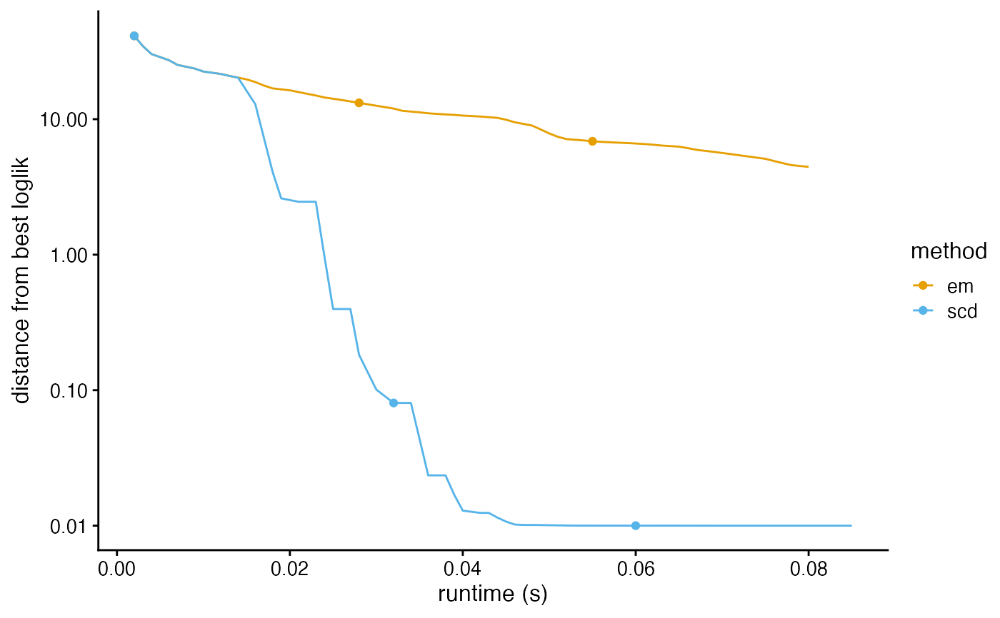
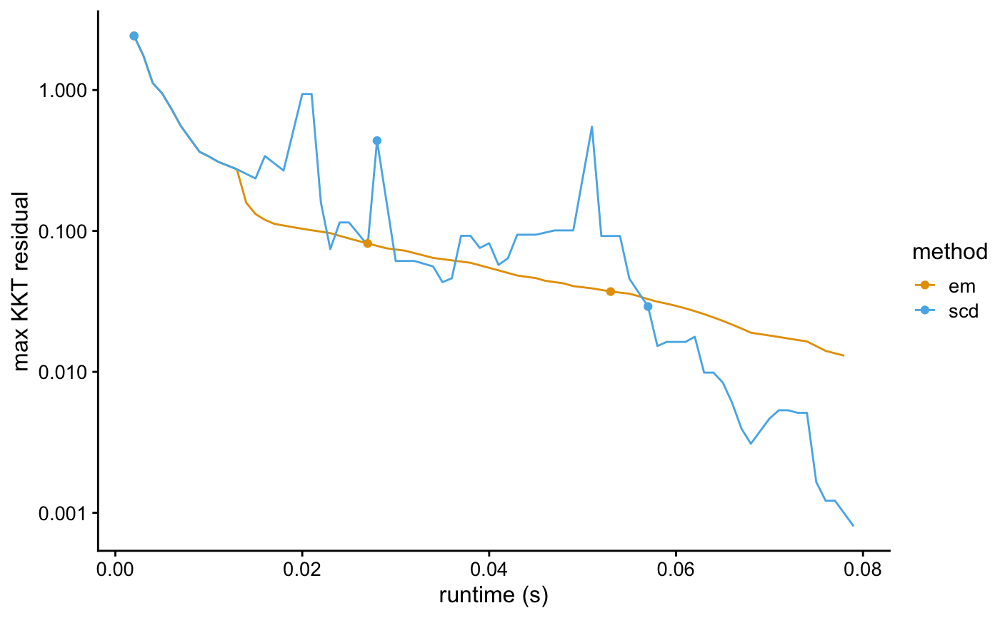
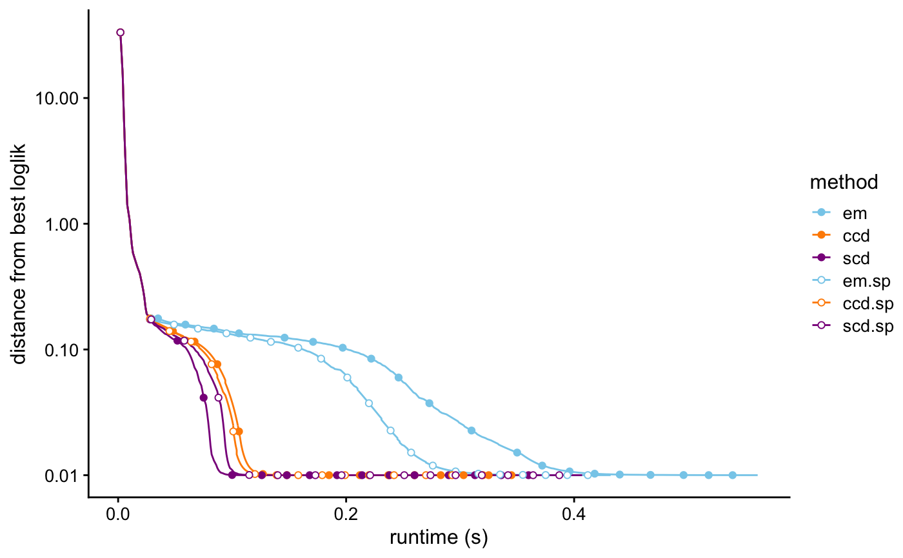
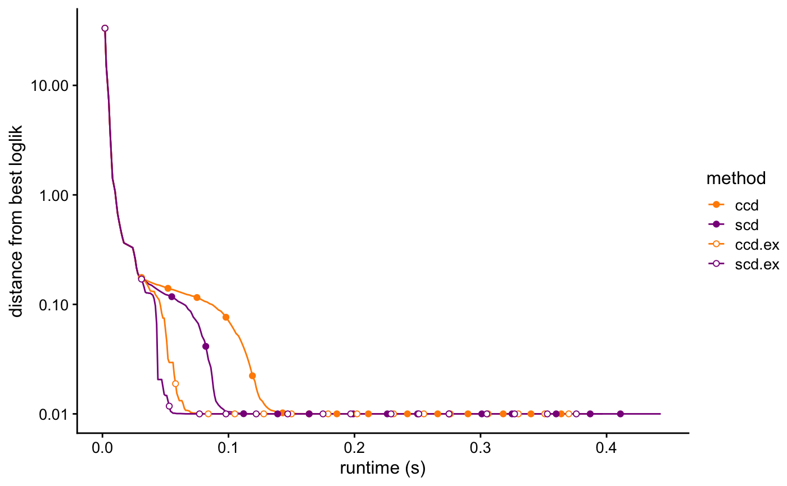
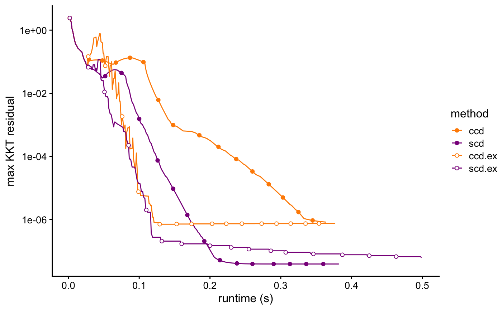

R/fit_poisson_nmf.R
fit_poisson_nmf.RdThis function approximates the input matrix X
by the non-negative matrix factorization L %*% t(F) by
nonnegative matrix factorization (NMF), in which the quality of the
approximation is measured by a “divergence” criterion;
equivalently, it optimizes the likelihood under a Poisson model of
the count data, X. It runs a specified number of coordinate-wise
updates to fit the L and F matrices.
fit_poisson_nmf( X, k, fit0, numiter = 100, method = c("em", "scd", "ccd", "mu"), control = list(), verbose = TRUE ) init_poisson_nmf( X, F, L, k, beta = 0.5, betamax = 0.99, minval = fit_poisson_nmf_control_default()$minval, e = fit_poisson_nmf_control_default()$eps ) fit_poisson_nmf_control_default()
| X | The n x m matrix of counts; all entries of X should be
non-negative. It can be a sparse matrix (class |
|---|---|
| k | An integer 2 or greater giving the matrix rank for a
random initialization of the factors and loadings. (They are
initialized uniformly at random.) This argument should only be
specified if the initial fit ( |
| fit0 | The initial model fit. It should be an object of class
“poisson_nmf_fit”, such as an output from
|
| numiter | The number of updates of the factors and loadings to perform. |
| method | The method to use for updating the factors and
loadings. Five methods are implemented: multiplicative updates,
|
| control | A list of parameters controlling the behaviour of the optimization algorithm. See ‘Details’. |
| verbose | When |
| F | An optional argument giving is the initial estimate of the
factors (also sometimes called the "basis vectors"). It should be
an m x k matrix, where m is the number of columns in the counts
matrix |
| L | An optional argument giving the initial estimate of the
loadings (also sometimes called the "activations"). It should an n
x k matrix, where n is the number of rows in the counts matrix
|
| beta | Initial setting of the extrapolation parameter. This is \(beta\) in Algorithm 3 of Ang & Gillis (2019). |
| betamax | Initial setting for the upper bound on the extrapolation parameter. This is \(\bar{\gamma}\) in Algorithm 3 of Ang & Gillis (2019). |
| minval | A small, positive constant used to safeguard the |
| e | A small, non-negative number added to the terms inside the
logarithms to avoid computing logarithms of zero. See the
description of |
Both init_poisson_nmf and fit_poisson_nmf
return an object capturing the optimization algorithm state (for
init_poisson_nmf, this is the initial state). It is a list
with the following elements:
A matrix containing the current best estimates of the factors.
A matrix containing the current best estimates of the loadings.
A matrix containing the non-extrapolated factor estimates.
If extrapolation is not used, Fn and F will be the
same.
A matrix containing the non-extrapolated estimates of the
loadings. If extrapolation is not used, Ln and L will
be the same.
A matrix containing the extrapolated factor estimates. If
the extrapolation scheme is not used, Fy and F will
be the same.
A matrix containing the extrapolated estimates of the
loadings. If extrapolation is not used, Ly and L will
be the same.
Value of the objective (“loss”) function computed at the current best estimates of the factors and loadings.
Value of the objective (“loss”) function
computed at the extrapolated solution for the loadings (Ly)
and the non-extrapolated solution for the factors (Fn). This
is used internally to implement the extrapolated updates.
The extrapolation parameter, \(beta\) in Algorithm 3 of Ang & Gillis (2019).
Upper bound on the extrapolation parameter. This is \(\bar{\gamma}\) in Algorithm 3 of Ang & Gillis (2019).
The setting of the extrapolation parameter at the last iteration that improved the solution.
A data frame containing detailed information about
the algorithm's progress. The data frame should have numiter
rows. The columns of the data frame are: "iter", the iteration
number; "loglik", the log-likelihood at the current best factor and
loading estimates; "dev", the deviance at the current best factor
and loading estimates; "res", the maximum residual of the
Karush-Kuhn-Tucker (KKT) first-order optimality conditions at the
current best factor and loading estimates; "delta.f", the largest
change in the factors matrix; "delta.l", the largest change in the
loadings matrix; "nonzeros.f", the proportion of entries in the
factors matrix that are nonzero; "nonzeros.l", the proportion of
entries in the loadings matrix that are nonzero; "extrapolate",
which is 1 if extrapolation is used, otherwise it is 0; "beta", the
setting of the extrapolation parameter; "betamax", the setting of
the extrapolation parameter upper bound; and "timing", the elapsed
time in seconds (recorded using proc.time).
Using this function requires some care; only minimal argument checking is performed, and error messages may not be helpful.
The EM and multiplicative updates are simple and fast, but can be
slow to converge to a stationary point. When control$numiter
= 1, the EM and multiplicative updates are mathematically
equivalent to the multiplicative updates, and therefore share the
same convergence properties. However, the implementation of the EM
updates is quite different; in particular, the EM updates are more
suitable for sparse counts matrices. The implementation of the
multiplicative updates is adapted from the MATLAB code by Daichi
Kitamura http://d-kitamura.net.
Since the multiplicative updates are implemented using standard matrix operations, the speed is heavily dependent on the BLAS/LAPACK numerical libraries used. In particular, using optimized implementations such as OpenBLAS or Intel MKL can result in much improved performance of the multiplcative updates.
The cyclic co-ordinate descent (CCD) and sequential co-ordinate descent (SCD) updates adopt the same optimization strategy, but differ in the implementation details. In practice, we have found that the CCD and SCD updates arrive at the same solution when initialized "sufficiently close" to a stationary point. The CCD implementation is adapted from the C++ code developed by Cho-Jui Hsieh and Inderjit Dhillon, which is available for download at https://www.cs.utexas.edu/~cjhsieh/nmf. The SCD implementation is based on version 0.4-3 of the NNLM package.
An additional re-scaling step is performed after each update to promote numerical stability.
The control argument is a list in which any of the
following named components will override the default optimization
algorithm settings (as they are defined by
fit_poisson_nmf_control_default):
numiterNumber of "inner loop" iterations to run when
performing and update of the factors or loadings. This must be set
to 1 for method = "mu" and, method = "ccd".
ncNumber of RcppParallel threads to use for the
updates. When nc is NA, the default number of threads
is used; see defaultNumThreads. This
setting is ignored for the multiplicative upates (method =
"mu").
minvalA small, positive constant used to safeguard
the multiplicative updates. The safeguarded updates are implemented
as F <- pmax(F1,minval) and L <- pmax(L1,minval),
where F1 and L1 are the factors and loadings matrices
obtained by applying an update. Thi is motivated by Theorem 1 of
Gillis & Glineur (2012). Setting minval = 0 is allowed, but
some methods are not guaranteed to converge to a stationary point
without this safeguard, and a warning will be given in this case.
extrapolateWhen extrapolate = TRUE, the
extrapolation scheme of Ang & Gillis (2019) is used.
extrapolate.resetTo promote better numerical stability of the extrapolated updates, they are “reset” every so often. This parameter determines the number of iterations to wait before resetting.
beta.increaseWhen the extrapolated update improves the solution, scale the extrapolation parameter by this amount.
beta.reduceWhen the extrapolaaed update does not improve the solution, scale the extrapolation parameter by this amount.
betamax.increaseWhen the extrapolated update improves the solution, scale the extrapolation parameter by this amount.
epsA small, non-negative number that is added to the terms inside the logarithms to sidestep computing logarithms of zero. This prevents numerical problems at the cost of introducing a small inaccuracy in the solution. Increasing this number may lead to faster convergence but possibly a less accurate solution.
zero.thresholdA small, non-negative number used to
determine which entries of the solution are exactly zero. Any
entries that are less than or equal to zero.threshold are
considered to be exactly zero.
Ang, A. and Gillis, N. (2019). Accelerating nonnegative matrix factorization algorithms using extrapolation. Neural Computation 31, 417–439.
Cichocki, A., Cruces, S. and Amari, S. (2011). Generalized alpha-beta divergences and their application to robust nonnegative matrix factorization. Entropy 13, 134–170.
Gillis, N. and Glineur, F. (2012). Accelerated multiplicative
updates and hierarchical ALS algorithms for nonnegative matrix
factorization. Neural Computation 24, 1085–1105.
Hsieh, C.-J. and Dhillon, I. (2011). Fast coordinate descent methods with variable selection for non-negative matrix factorization. In Proceedings of the 17th ACM SIGKDD international conference on Knowledge discovery and data mining, p. 1064-1072
Kim, Y., Carbonetto, P., Stephens, M. and Anitescu, M. (2020) A fast algorithm for maximum likelihood estimation of mixture proportions using sequential quadratic programming. To appear in Journal of Computational and Graphical Statistics.
Lee, D. D. and Seung, H. S. (2001). Algorithms for non-negative matrix factorization. In Advances in Neural Information Processing Systems 13, 556–562.
Lin, X. and Boutros, P. C. (2018). Fast nonnegative matrix factorization and applications to pattern extraction, deconvolution and imputation. bioRxiv doi:10.1101/321802.
# Simulate a 80 x 100 data set. library(Matrix) set.seed(1) X <- simulate_count_data(80,100,3)$X # Run 20 EM updates to find a good initialization. fit0 <- fit_poisson_nmf(X,k = 3,numiter = 20,verbose = FALSE)#># The fit_poisson_nmf interface implements 5 different algorithms # for optimizing a Poisson non-negative matrix factorization. Let's # run the different algoriths, and compare the quality of the fits. fit.mu <- fit_poisson_nmf(X,fit0 = fit0,numiter = 400, method = "mu",verbose = FALSE)#>fit.em <- fit_poisson_nmf(X,fit0 = fit0,numiter = 400, method = "em",verbose = FALSE)#>fit.ccd <- fit_poisson_nmf(X,fit0 = fit0,numiter = 300, method = "ccd",verbose = FALSE)#>fit.scd <- fit_poisson_nmf(X,fit0 = fit0,numiter = 300, method = "scd",verbose = FALSE)#>clrs <- c("royalblue","skyblue","darkorange","darkmagenta") fits <- list(mu = fit.mu,em = fit.em,ccd = fit.ccd,scd = fit.scd) print(compare_poisson_nmf_fits(fits),digits = 8)#> k loglik dev res runtime nonzeros.f nonzeros.l #> mu 3 -530270.69 1051628.7 6.5838683e-02 0.632 0.86 0.89583333 #> em 3 -530270.69 1051628.7 6.5838705e-02 0.485 0.86 0.89583333 #> ccd 3 -528244.65 1047576.6 5.3908864e-05 0.392 0.85 0.83750000 #> scd 3 -528244.65 1047576.6 5.4411955e-05 0.356 0.85 0.83750000# All algorithms except the multiplicative updates can handle # sparse matrices as well as dense ones. Y <- as(X,"dgCMatrix") fit.em.sp <- fit_poisson_nmf(Y,fit0 = fit0,numiter = 400, method = "em",verbose = FALSE)#>fit.ccd.sp <- fit_poisson_nmf(Y,fit0 = fit0,numiter = 300, method = "ccd",verbose = FALSE)#>fit.scd.sp <- fit_poisson_nmf(Y,fit0 = fit0,numiter = 300, method = "scd",verbose = FALSE)#>fits <- list(em = fit.em,ccd = fit.ccd,scd = fit.scd,em.sp = fit.em.sp, ccd.sp = fit.ccd.sp,scd.sp = fit.scd.sp) print(compare_poisson_nmf_fits(fits),digits = 8)#> k loglik dev res runtime nonzeros.f nonzeros.l #> em 3 -530270.69 1051628.7 6.5838705e-02 0.485 0.86 0.89583333 #> ccd 3 -528244.65 1047576.6 5.3908864e-05 0.392 0.85 0.83750000 #> scd 3 -528244.65 1047576.6 5.4411955e-05 0.356 0.85 0.83750000 #> em.sp 3 -530270.69 1051628.7 6.5838705e-02 0.344 0.86 0.89583333 #> ccd.sp 3 -528244.65 1047576.6 5.3908864e-05 0.297 0.85 0.83750000 #> scd.sp 3 -528244.65 1047576.6 5.4411955e-05 0.485 0.85 0.83750000# The "extrapolated" updates can sometimes produce much better fits. fit.ccd.ex <- fit_poisson_nmf(X,fit0 = fit0,numiter = 300,method = "ccd", control = list(extrapolate = TRUE),verbose = FALSE)#>fit.scd.ex <- fit_poisson_nmf(X,fit0 = fit0,numiter = 300,method = "scd", control = list(extrapolate = TRUE),verbose = FALSE)#>fits <- list(ccd = fit.ccd,scd = fit.scd,ccd.ex = fit.ccd.ex, scd.ex = fit.scd.ex) print(compare_poisson_nmf_fits(fits),digits = 8)#> k loglik dev res runtime nonzeros.f nonzeros.l #> ccd 3 -528244.65 1047576.6 5.3908864e-05 0.392 0.85000000 0.83750000 #> scd 3 -528244.65 1047576.6 5.4411955e-05 0.356 0.85000000 0.83750000 #> ccd.ex 3 -527639.09 1046365.5 4.5935281e-07 0.882 0.87666667 0.81666667 #> scd.ex 3 -527639.09 1046365.5 1.0219130e-06 0.374 0.87666667 0.81666667